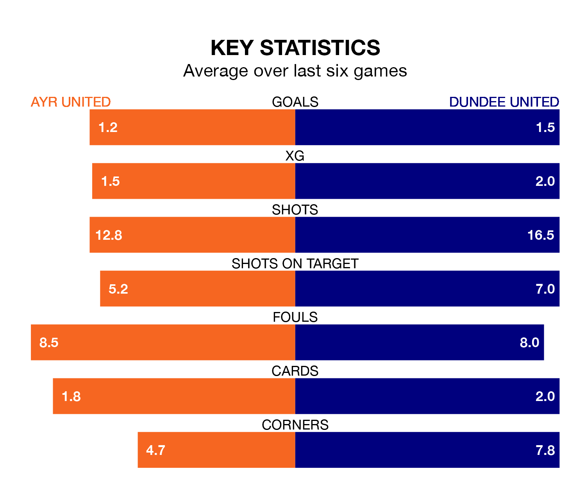

Saturday's match between Ayr United and Dundee United promises to be one for the neutrals, as two of the Championship's most free-scoring sides go head-to-head.
Ahead of the game at Somerset Park, the Honest Men and the Terrors sit fourth and joint-top in the goal-scoring charts, with 29 and 43 goals respectively.
Midfielder Jamie Murphy leads the way for the home side, having bagged five goals in their 22 games to date.
And Louis Moult has been the main man in the opponents' penalty box for Dundee, with nine goals.
Dundee are top of the table after 21 games, of which they have won 13 and drawn six, earning 45 points.
Ayr are five places behind Dundee United in sixth, with seven wins and five draws putting them on 26 points.
With Jack Walton between the sticks, the Terrors can rely on one of the league's safest pair of hands. He has kept 13 clean sheets in his 21 appearances this season, and no 'keeper has prevented the opposition scoring more often in the Championship.
In Ayr United's net, Charlie Albinson has four clean sheets in 16 games. He has conceded a goal every 60 minutes, three times as often as the 189 minutes between goals for Walton.
In the last 10 years, Ayr and Dundee have played each other on 14 occasions. Ayr won four of them, Dundee seven, and they drew three times.
On average, the Honest Men scored 0.9 goals and the Terrors 1.2 in those matches.
Their last meeting was on December 9, when Dundee won 1-0 at home.
The Honest Men are in mixed form in the Championship, with two wins and two draws from their last six games.
With three wins and two draws over that period, the away team's form is better – they have taken 11 points from 18, compared to the hosts' eight.
Ayr's last match was on January 27, a 2-1 win against Queen's Park, with Mark McKenzie and Murphy getting the goals for the Honest Men.
Dundee drew 0-0 with Dunfermline Athletic last time out, also on January 27.
Saturday's match will be refereed by Gavin Duncan, who has taken charge of four Championship games so far this season, issuing no red cards and booking 16 players. He has awarded two penalties.
The last Ayr game Duncan refereed was a 3-1 home loss to Inverness CT on January 6. He is yet to oversee a match featuring Dundee this season.
Updated: 15:45 (UTC), 02/02/24